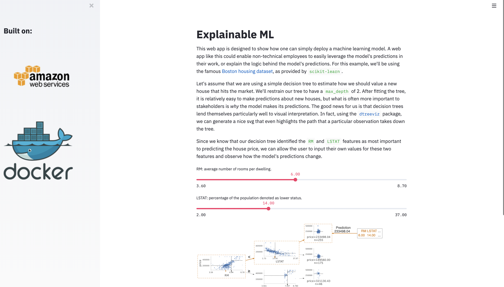

Deploying web apps with Streamlit, Docker, and AWS - part 1
How to build a Dockerfile suited for a Streamlit web app.
Containerizing a Streamlit web app with Docker
In this tutorial, we will be assuming that you already have a streamlit app ready to deploy.
If you don’t, no worries! The streamlit docs have some great tutorials,
but if you’d rather jump right in, you can go ahead and git clone my small example here.
So let’s say that you’ve got your streamlit web app prepared in a directory that looks as follows:
├── app.py # streamlit code
├── content.py # textual content - imported into app
├── images # various images for your app
│ ├── logo.png
│ ├── background.png
├── requirements.txt # libraries used by your app
In order to containerize this application with Docker, the first step will be to add a Dockerfile
to the root of your directory. Your Dockerfile acts as a set of instructions (more specifically,
a set of commands that could equivalently be called from the command line) from which Docker will
build an image for your app. Using this image, Docker will then create a container. If this is all new,
I’d recommend taking a look at this Docker overview!
The Dockerfile
The Dockerfile for my small example looks like this:
# base image
# a little overkill but need it to install dot cli for dtreeviz
FROM ubuntu:18.04
# ubuntu installing - python, pip, graphviz
RUN apt-get update &&\
apt-get install python3.7 -y &&\
apt-get install python3-pip -y &&\
apt-get install graphviz -y
# exposing default port for streamlit
EXPOSE 8501
# making directory of app
WORKDIR /streamlit-docker
# copy over requirements
COPY requirements.txt ./requirements.txt
# install pip then packages
RUN pip3 install -r requirements.txt
# copying all files over
COPY . .
# cmd to launch app when container is run
CMD streamlit run app.py
# streamlit-specific commands for config
ENV LC_ALL=C.UTF-8
ENV LANG=C.UTF-8
RUN mkdir -p /root/.streamlit
RUN bash -c 'echo -e "\
[general]\n\
email = \"\"\n\
" > /root/.streamlit/credentials.toml'
RUN bash -c 'echo -e "\
[server]\n\
enableCORS = false\n\
" > /root/.streamlit/config.toml'
It is worth mentioning that the ubuntu portions of this Dockerfile are a little bit overkill
for the scale of this small web app, however, I found them necessary to get a nice rendering of
an svg file generated by the dtreeviz package. This is also a great example of a simpler Dockerfile
on this blog. There is a lot to unpack here, so I’ll do so line by line.
Ubuntu commands
At the top, we build off the base ubuntu image with the following line:
FROM ubuntu:18.04
This means that docker pulls the ubuntu:18.04 image from dockerhub to begin with.
Next, we update and install a few things we’ll need for our web app.
RUN apt-get update &&\
apt-get install python3.7 -y &&\
apt-get install python3-pip -y &&\
apt-get install graphviz -y
Setting up the app
After that, we set up our actual application within the image. Since streamlit’s default port is 8501, we open up that port.
EXPOSE 8501
From there, we (optionally) define a working directory within the image and copy over all of our files, then install the necessary python libraries (as defined in our requirements.txt)
WORKDIR /streamlit-docker
COPY requirements.txt ./requirements.txt
RUN pip3 install -r requirements.txt
COPY . .
Streamlit-specific commands
Finally, we must include a few commands to ensure that streamlist runs as expected. We define a command to launch our web app whenever our docker container gets launched,
CMD streamlit run app.py
and we finish by including a few commands to configure streamlit correctly.
ENV LC_ALL=C.UTF-8
ENV LANG=C.UTF-8
RUN mkdir -p /root/.streamlit
RUN bash -c 'echo -e "\
[general]\n\
email = \"\"\n\
" > /root/.streamlit/credentials.toml'
RUN bash -c 'echo -e "\
[server]\n\
enableCORS = false\n\
" > /root/.streamlit/config.toml'
Building the docker image and running the container
Now that we have our web app and our Dockerfile all set up, we’re ready to build the image. We can do so with a single command.
docker image build -t streamlit:app .
where -t tags our image as streamlit:app and . references the directory with the Dockerfile. When you run from the command line, you will see Docker moving through each step defined in the Dockerfile and installing many packages to the image. Once it is finished (it may take a few minutes the first time), you should see a verification like Successfully tagged streamlit:app, letting you know that the Docker image was successfully created. You can further verify that the image was created correctly by running docker image ls, where you should see something like
$ docker image ls
REPOSITORY TAG IMAGE ID CREATED SIZE
streamlit app ecda3493de33 50 seconds ago 1.52GB
At this point, our image has been successfully built and we are ready to run it by way of container! (If the differences between an image and container are confusing, this short post provides some helpful distinctions). One command will do the trick,
docker container run -p 8501:8501 -d streamlit:app
where -p allows you to publish a container’s port to the host’s port and -d allows you to run it in the background. You can then verify that is is running with a command like this,
$ docker ps
CONTAINER ID IMAGE COMMAND CREATED STATUS PORTS NAMES
82ecab4abfb1 streamlit:app "/bin/sh -c 'streaml…" 22 seconds ago Up 21 seconds 0.0.0.0:8501->8501/tcp weird_name
Better yet, pop open a web browser and you can view your web app, running in a docker container, at http://localhost:8501/. If you’re using my example, it should look something like this!
